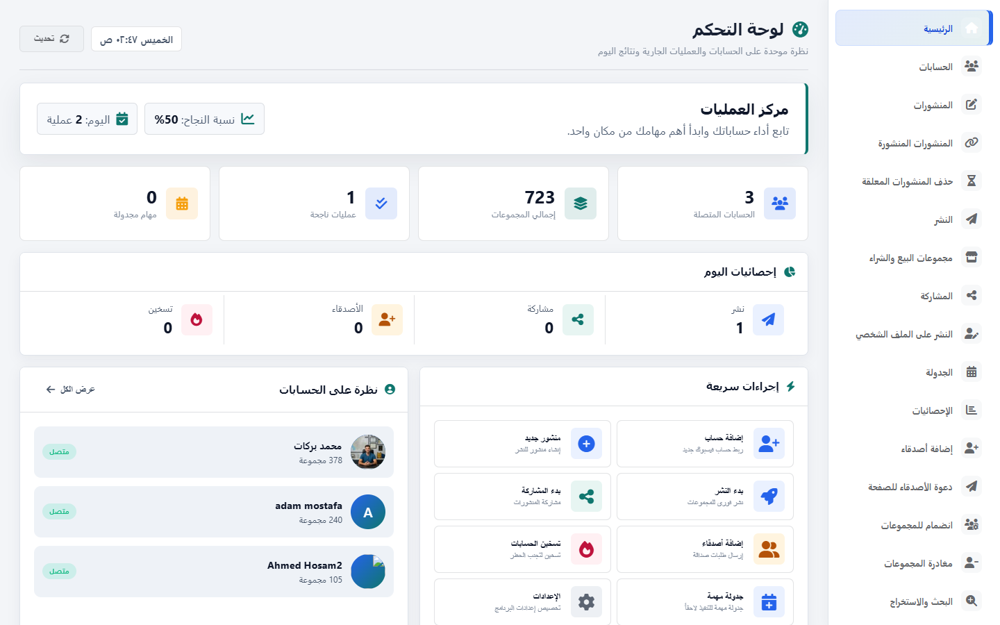

01
حملات نشر منظمة
اختر الحساب والهوية والمنشور والمجموعات، ثم اضبط التوقيت والحدود وشاهد النتائج أولاً بأول.
نظّم حساباتك، منشوراتك، مجموعاتك وتفاعلاتك من لوحة تشغيل واحدة مصممة للعمل اليومي الجاد.
من تجهيز المحتوى إلى متابعة حالته والرد على العملاء، كل خطوة لها مكان واضح وسجل يمكن الرجوع إليه.
اختر الحساب والهوية والمنشور والمجموعات، ثم اضبط التوقيت والحدود وشاهد النتائج أولاً بأول.
ملفات شخصية وصفحات ومجموعات مستقلة لكل هوية مع تحديث واضح للحالة.
مهام فورية أو مجدولة ومتكررة، مع تشغيل وإيقاف وتعديل دون فقد الإعدادات.
اربط رداً بكل منشور، اختر هوية الرد، وتابع ما تم الرد عليه والتحقق منه.
ابحث في المنشورات، استخرج التعليقات والتفاعلات، ثم رتّب النتائج وصدّرها إلى Excel.
تمييز المنشور المنشور والمعلق والمرفوض والمحذوف مع حفظ رابطه ووقته.
واجهات عملية هادئة، مصممة للمتابعة المتكررة والقرارات السريعة.

البرنامج لا يخفي ما يحدث. كل حملة لها إعدادات وتقدم ونتائج وسجل.
اطلب عرضاً عملياًسجّل الدخول من المتصفح المخصص واحفظ الجلسة بأمان.
نصوص وصور وتنويع محتوى وبنوك كلمات قابلة لإعادة الاستخدام.
حدد الوجهات والهوية والتوقيت وحدود التشغيل المناسبة.
راجع الروابط والحالات والسجل، ثم صدّر النتائج عند الحاجة.
استخدم البرنامج بما يتوافق مع سياسات فيسبوك والقوانين المحلية. نتائج الأتمتة تعتمد على حالة الحساب وإعدادات المنصة.
أسعار واضحة تشمل جميع أقسام البرنامج وكل التحديثات طوال مدة الاشتراك، مع تجربة مجانية لمدة 3 أيام.
مرونة كاملة للبدء والتجربة العملية.
500 جنيه / شهرمدة مريحة لاختبار أثر البرنامج على سير العمل.
1,200 جنيه / 3 أشهر وفّر 300 جنيهأفضل قيمة للاستخدام المستمر والفِرق الجادة.
3,500 جنيه / سنة وفّر 2,500 جنيهنعم. يمكنك إدارة عدة حسابات، مع جلسة ومجموعات وهويات مستقلة لكل حساب.
نعم، يوفر البرنامج رابط اتصال محلياً أو عبر الإنترنت للتحكم من الهاتف، مع حماية بالسيريال.
الترخيص القياسي يرتبط بجهاز واحد تلقائياً. يمكن لمسؤول الاشتراك فك ربط الجهاز عند الحاجة.
نعم، تحصل على تجربة مجانية لمدة 3 أيام لاختبار جميع أقسام البرنامج ووظائفه قبل الاشتراك.
نعم، تشمل كل خطة جميع تحديثات البرنامج الجديدة طوال مدة الاشتراك دون تكلفة إضافية.
يتوقف تفعيل البرنامج إلى أن يتم تمديد الاشتراك. تظل بياناتك المحلية محفوظة على جهازك.
اختر التجربة أو الاشتراك المناسب، وستُفتح رسالة واتساب جاهزة لإتمام الطلب بسرعة.
واتساب المبيعات والدعم01273241214